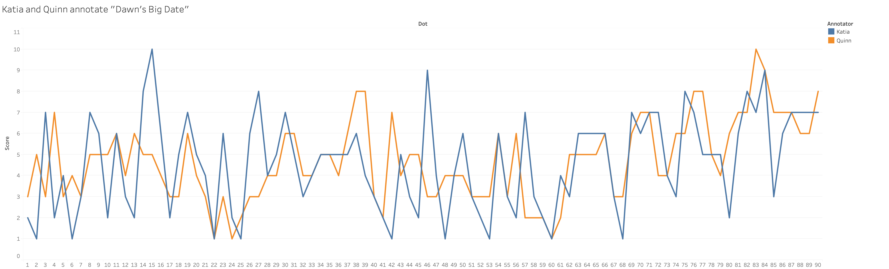
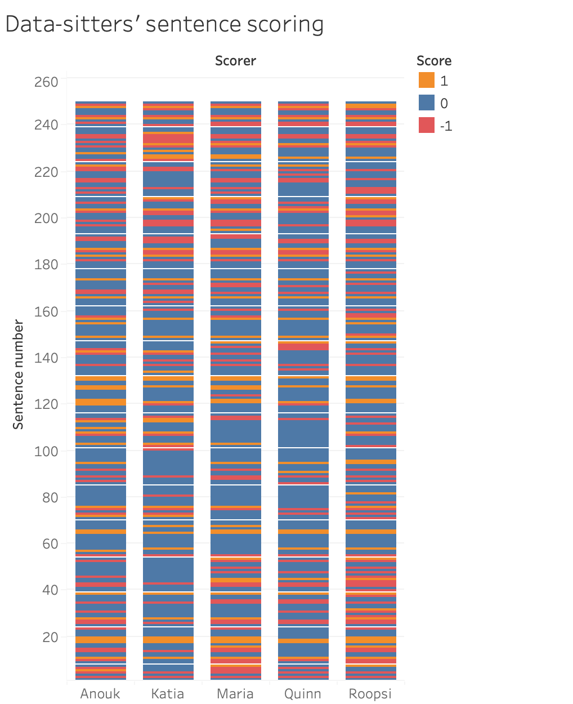

DSC #11: Katia and the Sentiment Snobs#

by Katherine Bowers and Quinn Dombrowski
October 25, 2021
Katia#
When I’m not thinking about the BSC corpus, I’m thinking about my Dostoevsky corpus. That’s the other DH project I’m involved with. I think I’ve mentioned before that I’m a Russianist. I’m co-PI on a “Digital Dostoevsky” project that involves a team that is all pretty new to DH. I jokingly call myself the n00b Data-Sitter, but on the Dostoevsky project, I’m the one with the most experience. (That’s a little scary!). Team Dostoevsky is lucky because we have a wonderful consultant that we’re able to call on to answer questions about TEI quandaries, software questions, and methodologies to try out. Her name is Eka Grguric and she’s a Digital Scholarship Librarian at my university.
For those of you who are more familiar with Ann M. Martin than Dostoevsky, let me give you a little background. Dostoevsky is a 19th-century Russian writer who wrote a bunch of long novels that pose and work through philosophical, theological, and moral dilemmas. Dostoevsky viewed his novels as a kind of laboratory, a testing ground for his ideas. One of the key components of his novelistic craft is the way his characters are written and interact. When I am teaching my Dostoevsky seminar, I tell my students that the characters’ emotions and psychologies are larger than life. They are written to explode off the page and drag you into his novels. They are exaggerated, but often exaggerated in universally relatable ways. I’d say there is a LOT of emotion in Dostoevsky’s novels.
Last spring, Eka and I were talking about things Team Dostoevsky could do to analyze the Dostoevsky corpus and one of the methods that came up was sentiment analysis. Sentiment analysis, Eka said, is a way of visualizing the emotional landscape of a corpus. Basically, words are valued as positive, negative, or neutral. When all the words in a sentence (or an utterance) are analyzed in this way, you get a reading as to whether the excerpt is more positive, more negative, or neutral. In theory, you could use this method to determine how positive or negative, emotionally speaking, a specific Dostoevsky character is.
I decided I wanted to try out sentiment analysis because it sounded possibly really interesting for our Dostoevsky corpus and its emotionally extreme characters. So I wrote to Quinn and suggested that we write a Data-Sitters Club book about it. Trying it out on a contemporary anglophone corpus before embarking on the same for the 19th-century Russian corpus, which always presents difficulties for tools and methods that use things trained on contemporary Russian (for the things that even exist for Russian) seemed like a great idea to me. Plus, a new Data-Sitters Club book! What wasn’t to love?
But I was NOT ready for Quinn’s reaction (OR the strength of her eye roll!) when I brought it up…
Quinn#
I have feelings about sentiment analysis. No, I do not think you should try to measure them. I don’t teach it in my non-English DH class, but I very clearly remember the image on my sentiment analysis slide during a brief overview of methods:

One thing that’s easy to forget if you’re new to DH is that DH, like Soylent Green, is people. And the technical approaches you choose for your computational analysis don’t exist in some Platonic realm of methods. Methods have histories. Tools, especially, have histories. And just as you would take care with the literary theorists you cite, because your choice of theorists has implications for how (and whether) your work will be accepted in different circles, you should take similar care with regard to which tools and methods you use for computational text analysis. Tools are not neutral, and just because half a decade has passed since a particular spat of tool-centric DH drama, it doesn’t mean the peer reviewers for your next paper have forgotten about it.
Even a decade after Bethany Nowviskie’s “Eternal September of the Digital Humanities”, it still rings true. People still discover DH every day – and their enthusiasm is sometimes invigorating, sometimes exhausting for DH old-timers… and it can also be to the newcomers’ peril. Unless someone fills them in, they might never think to, if you will, “background check” the tools they encounter and adopt. Until they find that their conference submissions keep getting rejected, with feedback that is more intense and less helpful than they expected.
I’ve had conversations like this with grad students, whose DH-savvy advisors never mentioned that their tool or method was once a DH flash point that left scars. DHers have long memories, and especially in the context of a peer review where it’s not obvious that the submission is from someone whose first encounter with DH was well after a particular blow-up happened, I share the instinct to hold the old battle lines with a firm, “NOPE” or at best a 😬😬😬 with sentiment analysis. And especially in the context of my fellow-data sitters, who get my unfiltered take on things (unlike peer review), that was exactly the reaction Katia got when she suggested sentiment analysis to me in April 2021.
But first, let me tell you a story from the history of DH in the 2010’s.
The Syuzhet Incident#
Once upon a time in February 2015 – and it feels even longer ago – Matt Jockers (who co-founded the Stanford Literary Lab that the Data-Sitters Club is now affiliated with, and who was in 2015 an Associate Professor of English at the University of Nebraska, Lincoln) wrote a blog post about his new R package, called “Syuzhet” (with explicit props to Vladimir Propp’s concept of syuzhet as the “organization of the narrative”). Gesturing to Kurt Vonnegut’s idea of there being a finite number of plots, Syuzhet aimed to extract the data necessary to visualize the narrative’s plot model. And what it used to extract that data was sentiment analysis.
The R package got a lot of publicity! And there was a follow-up blog post from Jockers that spelled things out a little more, including the mapping to Vonnegut’s plot models.
And then Annie Swafford, then an Assistant Professor in English at SUNY-New Paltz (who had already gained a following in the DH world through her 2014 DH project / dissertation at the University of Virginia, Songs of the Victorians) raised some questions in a blog post, “Problems with the Syuzhet Package”.
There were multiple takeaways from this post, depending on your mathematical comfort level. The part that stuck with me was the description of how sentiment analysis works… or, rather, how badly it falls short. Three out of the four sentiment taggers (including Bing, the one recommended at the time) were literally just lists of contemporary English words with numerical scores attached. Two of the taggers (again, including Bing) scored words as -1, 0, or 1 – not a lot of room for nuance. Words are scored in isolation, so that negation (e.g. “not”) or augmentation (e.g. “extremely”) don’t affect the way a word (e.g. “good”) is scored. Syuzhet in particular only counts a word once per sentence if it’s repeated.

To this day, any mention of sentiment analysis makes me think of Mr. Potato Head, because of Swafford’s example illustrating the fact that “Well, it’s like a potato” gets a more-positive evaluation than “I am happy–so happy–today”, because both “well” and “like” are evaluated positively, and the repetition of “happy” gets dropped.
But there were other issues at hand that went beyond “sentiment analysis sucks” (which was what I got out of it at the time). Swafford’s blog post and the back-and-forth that ensued introduced the less-statistically-savvy corners of the Anglophone DH world to ringing artifacts resulting from low-pass filters, which she flagged as the actual cause of the so-called “foundational shapes” of plot.
This didn’t go down as a super-niche battle of the stats geeks over the finer points of computational methodologies. As the replies and responses piled up (in order, Jockers, Swafford, Jockers, Jockers, Swafford, Jockers, Jockers) it became a very visible proxy battle for bigger issues within DH and academia more broadly. Issues like sexism and power, collegiality and respect, came to a head in other ways, and with other marginalized groups, in the mid-2010’s. In my DH circles, Swafford became something of a folk hero, and when I finally met her in person at a conference a couple years after the Syuzhet incident, I was excited to grab lunch together and vent about my work situation at UC Berkeley, where I had also experienced dynamics similar to those undercurrents of how Syuzhet had played out in public.
This tale would be incomplete without an epilogue. Neither Jockers nor Swafford is still in DH, or academia for that matter. Jockers became a dean at Central Washington University, started a business using computational text analysis as a consultant to authors of fiction, then left academia for a gig at Apple in 2021. Swafford left SUNY in 2017 to become a Digital Humanities Specialist at Tufts University, and in 2019 she left academia altogether to write, as she puts it, “queer romance novels about nerds falling in love despite trauma and toxic masculinity”. I can’t wait to read them someday.
Enough time has passed, though, that we can see how the dust has settled. I’d assumed Syuzhet had been buried in the junk drawer of DH tools, and I was completely caught off-guard to see people recently using it and even writing tutorials for it. Asking around among recent grad students, those who had heard of Syuzhet did not know about Annie Swafford. All of which I found baffling, which is probably a sign that I have become one of those Old DH People.
The Syuzhet Incident was a big deal at a fraught moment in the field of DH, and it played a major role in shaping my opinion about sentiment analysis. But there’s been a lot of significant development on many technical fronts in the last few years– including development on Syuzhet itself. Maybe it’s time for me to give sentiment analysis another look?
Sentiment Analysis 101#
There are two technical approaches to sentiment analysis: one involves word lists, one involves a different computational method called “word vectors”. In this DSC book, we’re going to stick to the word list method, but we’ll get back to word vectors in a future book. (If you’d like a taste of what word vectors can do, you can check out our recent Super Special: “Business is to Successful as Babysitter is to…” in the collection We Are The Baby-Sitters Club, available in print and audiobook).

Two out-of-the-box packages for English sentiment analysis in Python that get mentioned a lot in tutorials are Textblob and VADER. There are also packages like Polyglot that claim to offer sentiment analysis in over a hundred languages… which is just to say that they used machine translation to translate English word lists into other languages and called it a day, which layers some new problems on top of the issues inherent to word list based sentiment analysis. Monolingual readers: please take note of the fact that your colleagues who work across multiple languages are dumbstruck with horror right now upon reading this, as you can see from our Data-Sitters Google Docs comment thread about this point.
If you look up tutorials for doing sentiment analysis, you’ll see a lot of examples from things like reviews (movie reviews, restaurant reviews, etc.) or social media posts. That’s because those are the kinds of domains where sentiment analysis – especially using pre-defined lists of words – does a decent job. Those are situations where you potentially have a lot of short texts as your input (more than any person could reasonably read through with their eyeballs!) and you want to get a broad sense of whether people love or hate a thing. Or if people are spewing awful stuff on social media; anything involving hate speech is on trend in the social sciences these days.

That’s the kind of granularity sentiment analysis is designed for. The data source for the word lists also matters: apply 21st century word lists to 19th century literature, and things get wonky because language use changes over time and in different contexts. (Imagine if you tried to run sentiment analysis based on Wall Street Journal data on the lyrics to Michael Jackson’s “Bad”, where “bad” takes on positive traits!) But we’re going to start on easy mode, with some examples from Baby-Sitters Club books that use straightforward negative or positive language in modern English:
Negative:
What I meant was that it was chilling, horrible, disgusting, and the meanest thing in the world – only I couldn’t say that in front of a little baby. (BSC #25: Mary Anne and the Search for Tigger)
Something cold and slimy and disgusting and icky touched my neck and then wriggled beneath the collar of my shirt and down my spine. (Super Mystery #3: Baby-Sitters’ Fright Night)
I was expecting some disgusting vegetarian substitute. (BSC #102: Mary Anne and the Little Princess)
As bad as Saturday night was, Sunday morning was just awful. (BSC #8: Boy-Crazy Stacey)
He looked awful, as if he’d been crying for hours. (Super Special #13: Aloha, Baby-Sitters!)
Isn’t prejudice awful? (Mystery #3: Mallory and the Ghost Cat)
It’s just that I found out the most terrible thing. (Mystery #5: Mary Anne and the Secret in the Attic)
I felt terrible: terrible about the lie, terrible about how badly I had handled the whole thing. (BSC #77: Dawn and Whitney, Friends Forever)
Playing Monopoly with anybody can be a slow and torturous experience, but with Charlotte it’s the absolute worst. (Mystery #2: Beware, Dawn!)
It was her worst baby-sitting experience ever. (BSC #17: Mary Anne’s Bad Luck Mystery)
Positive:
We made an awesome pasta dish, with sun-dried tomatoes and basil. (Mystery #23: Abby and the Secret Society)
The show is going to be awesome. (BSC #99: Stacey’s Broken Heart)
You’re a wonderful big sister and a big help to your mommy and daddy. (BSC #45: Kristy and the Baby Parade)
Richard is a wonderful stepdad, and Mary Anne is the best. (BSC #88: Farewell, Dawn)
When I got to California, I had an absolutely fantastic time. (BSC #23: Dawn on the Coast)
And Logan scored a touchdown, which was so fantastic. (BSC #102: Mary Anne and the Little Princess)
This is the best job in the world. (BSC #114: The Secret Life of Mary Anne Spier)
She is the best listener and the most loyal friend. (BSC #103: Happy Holidays, Jessi)
Suddenly I had a great stepmom, a great stepsister, and a great new house. (BSC #102: Mary Anne and the Little Princess)
We can get great ice-cream sundaes at Friendly’s. (BSC #120: Mary Anne and the Playground Fight)
As human readers, we should all hopefully be on the same page that the first 10 examples express negative sentiment, and the second 10 examples express positive sentiment. Let’s see what Textblob and VADER make of them!
Trying Textblob and VADER#
To get started, let’s install Textblob and VADER. (You only have to run this cell the first time you run this code on a particular Python environment.)
#Import the system module to be able to install other libraries
import sys
#Installs Textblob
!{sys.executable} -m pip install textblob
#Installs VADER
!{sys.executable} -m pip install vaderSentiment
#Installs rpy2
!{sys.executable} -m pip install rpy2
Next, we import the libraries we need.
import os
#Import VADER sentiment analyzer
from vaderSentiment.vaderSentiment import SentimentIntensityAnalyzer
vaderanalyzer = SentimentIntensityAnalyzer()
#Import Textblob
from textblob import TextBlob
from textblob.sentiments import PatternAnalyzer
#Import Pandas to be able to create tables of data
import pandas as pd
import rpy2
Then, we’ll put those emphatically positive and negative sentences from above into a list:
sentences = ["What I meant was that it was chilling, horrible, disgusting, and the meanest thing in the world -- only I couldn’t say that in front of a little baby.", "Something cold and slimy and disgusting and icky touched my neck and then wriggled beneath the collar of my shirt and down my spine.", "I was expecting some disgusting vegetarian substitute.", "As bad as Saturday night was, Sunday morning was just awful.", "He looked awful, as if he’d been crying for hours.", "Isn’t prejudice awful?", "It’s just that I found out the most terrible thing.", "I felt terrible: terrible about the lie, terrible about how badly I had handled the whole thing.", "Playing Monopoly with anybody can be a slow and torturous experience, but with Charlotte it’s the absolute worst.", "It was her worst baby-sitting experience ever.", "We made an awesome pasta dish, with sun-dried tomatoes and basil.", "The show is going to be awesome.", "You’re a wonderful big sister and a big help to your mommy and daddy.", "Richard is a wonderful stepdad, and Mary Anne is the best.", "When I got to California, I had an absolutely fantastic time.", "And Logan scored a touchdown, which was so fantastic.", "This is the best job in the world.", "She is the best listener and the most loyal friend.", "Suddenly I had a great stepmom, a great stepsister, and a great new house.", "We can get great ice-cream sundaes at Friendly's."]
Then we’ll create a table using that list, and display the table:
sentencesdf = pd.DataFrame(sentences, columns =['sentence'])
sentencesdf
| sentence | |
|---|---|
| 0 | What I meant was that it was chilling, horribl... |
| 1 | Something cold and slimy and disgusting and ic... |
| 2 | I was expecting some disgusting vegetarian sub... |
| 3 | As bad as Saturday night was, Sunday morning w... |
| 4 | He looked awful, as if he’d been crying for ho... |
| 5 | Isn’t prejudice awful? |
| 6 | It’s just that I found out the most terrible t... |
| 7 | I felt terrible: terrible about the lie, terri... |
| 8 | Playing Monopoly with anybody can be a slow an... |
| 9 | It was her worst baby-sitting experience ever. |
| 10 | We made an awesome pasta dish, with sun-dried ... |
| 11 | The show is going to be awesome. |
| 12 | You’re a wonderful big sister and a big help t... |
| 13 | Richard is a wonderful stepdad, and Mary Anne ... |
| 14 | When I got to California, I had an absolutely ... |
| 15 | And Logan scored a touchdown, which was so fan... |
| 16 | This is the best job in the world. |
| 17 | She is the best listener and the most loyal fr... |
| 18 | Suddenly I had a great stepmom, a great stepsi... |
| 19 | We can get great ice-cream sundaes at Friendly's. |
Sentiment scoring#
One of the challenges of sentiment analysis is that different tools have different features. TextBlob gives you a score (from -1 to 1), along with a subjectivity rating, which we don’t care about here and haven’t included in our table. A -1 score means the sentence is evaluated to be super-negative; a 1 score means it’s evaluated to be super-positive. VADER also gives you this same kind of total composite score (mercifully on the same scale, from -1 to 1), but it also breaks out the probability that the sentence is negative, neutral, and positive; all those scores together add up to 1. So we get a better view into what VADER is doing. (Thanks to StackOverflow here.)
We’ll add columns with the sentiment scores from both Textblob and VADER, then display the updated table:
sentencesdf['tbsentiment'] = sentencesdf['sentence'].apply(lambda sentence: TextBlob(sentence).sentiment[0])
sentencesdf['vadersentiment'] = [vaderanalyzer.polarity_scores(x)['compound'] for x in sentencesdf['sentence']]
sentencesdf['vader-neg'] = [vaderanalyzer.polarity_scores(x)['neg'] for x in sentencesdf['sentence']]
sentencesdf['vader-neu'] = [vaderanalyzer.polarity_scores(x)['neu'] for x in sentencesdf['sentence']]
sentencesdf['vader-pos'] = [vaderanalyzer.polarity_scores(x)['pos'] for x in sentencesdf['sentence']]
sentencesdf
| sentence | tbsentiment | vadersentiment | vader-neg | vader-neu | vader-pos | |
|---|---|---|---|---|---|---|
| 0 | What I meant was that it was chilling, horribl... | -0.537500 | -0.7906 | 0.235 | 0.765 | 0.000 |
| 1 | Something cold and slimy and disgusting and ic... | -0.513889 | -0.5267 | 0.129 | 0.871 | 0.000 |
| 2 | I was expecting some disgusting vegetarian sub... | -1.000000 | -0.5267 | 0.362 | 0.638 | 0.000 |
| 3 | As bad as Saturday night was, Sunday morning w... | -0.850000 | -0.7579 | 0.419 | 0.581 | 0.000 |
| 4 | He looked awful, as if he’d been crying for ho... | -0.600000 | -0.7269 | 0.433 | 0.567 | 0.000 |
| 5 | Isn’t prejudice awful? | -1.000000 | -0.7430 | 0.863 | 0.137 | 0.000 |
| 6 | It’s just that I found out the most terrible t... | -0.250000 | -0.5256 | 0.274 | 0.726 | 0.000 |
| 7 | I felt terrible: terrible about the lie, terri... | -0.700000 | -0.9081 | 0.488 | 0.512 | 0.000 |
| 8 | Playing Monopoly with anybody can be a slow an... | -0.366667 | -0.8225 | 0.328 | 0.615 | 0.057 |
| 9 | It was her worst baby-sitting experience ever. | -1.000000 | -0.6249 | 0.406 | 0.594 | 0.000 |
| 10 | We made an awesome pasta dish, with sun-dried ... | 1.000000 | 0.6249 | 0.000 | 0.709 | 0.291 |
| 11 | The show is going to be awesome. | 1.000000 | 0.6249 | 0.000 | 0.594 | 0.406 |
| 12 | You’re a wonderful big sister and a big help t... | 0.333333 | 0.7506 | 0.000 | 0.652 | 0.348 |
| 13 | Richard is a wonderful stepdad, and Mary Anne ... | 1.000000 | 0.8360 | 0.000 | 0.533 | 0.467 |
| 14 | When I got to California, I had an absolutely ... | 0.400000 | 0.5984 | 0.000 | 0.720 | 0.280 |
| 15 | And Logan scored a touchdown, which was so fan... | 0.400000 | 0.6825 | 0.000 | 0.634 | 0.366 |
| 16 | This is the best job in the world. | 1.000000 | 0.6369 | 0.000 | 0.625 | 0.375 |
| 17 | She is the best listener and the most loyal fr... | 0.611111 | 0.9016 | 0.000 | 0.387 | 0.613 |
| 18 | Suddenly I had a great stepmom, a great stepsi... | 0.507273 | 0.9231 | 0.000 | 0.472 | 0.528 |
| 19 | We can get great ice-cream sundaes at Friendly's. | 0.587500 | 0.6249 | 0.000 | 0.631 | 0.369 |
It’s good to see that VADER gives most of our negative sentences a positivity score of 0. That said, VADER gave “Playing Monopoly with anybody can be a slow and torturous experience, but with Charlotte it’s the absolute worst” a 5.7% chance of being positive. (Clearly it has never played board games with children.) None of the positive sentences have any chance of being negative according to VADER.
It’s interesting, though, to see where VADER and TextBlob diverge. TextBlob is confident. Cocky, even. Multiple of our negative sentences get the maximum -1 score, and the same with our positive sentences getting a score of 1. VADER’s composite sentiment score (combining the negative, neutral, and positive values) is only -.5 for “I was expecting some disgusting vegetarian substitute”, which TextBlob ranks a -1.
TextBlob is sure that “Isn’t prejudice awful?” also deserves a -1, whereas VADER gives it a score of 86% neutral. This brings us into some interesting questions of perspective that I hadn’t necessarily considered as I was grabbing sentences with the word “awful” in them using AntConc (check out DSC #4: AntConc Saves the Day). Prejudice is awful. Even without the word “awful” in the sentence, “prejudice” alone should be a sign that there’s some negativity in this sentence (assuming there’s no negation, like, “I dream of a world without prejudice.”) I’d be inclined to score it negatively. But is the statement that prejudice is awful inherently negative? Or is it, as VADER evaluates it to be, more of a neutral statement about a negative thing? What if I try the sentence “I think it’s prejudice.”
prejudice = "I think it's prejudice."
blob = TextBlob(prejudice, analyzer=PatternAnalyzer())
print(blob.sentiment)
print(vaderanalyzer.polarity_scores(prejudice))
Sentiment(polarity=0.0, subjectivity=0.0)
{'neg': 0.524, 'neu': 0.476, 'pos': 0.0, 'compound': -0.5106}
potato = "The teenagers around here get their own cars (fancy ones) as soon as they’re able to drive."
blob = TextBlob(potato, analyzer=PatternAnalyzer())
print(blob.sentiment)
print(vaderanalyzer.polarity_scores(potato))
Sentiment(polarity=0.55, subjectivity=0.8125)
{'neg': 0.0, 'neu': 1.0, 'pos': 0.0, 'compound': 0.0}
In the first result, TextBlob doesn’t know the word “prejudice”, and it thinks “I think it’s” are neutral words (even from the perspective of evaluating subjectivity… which… I have questions there), so the whole thing gets a score of 0. VADER, on the other hand, knows the word “prejudice”, and its evaluation is split 52/48 in favor of a negative evaluation. And yet, adding in the word “awful” (as in our original sentence), which you would think would increase the negativity score, actually shifts the balance significantly towards neutrality.
So far VADER is looking better – or at least, more nuanced – than TextBlob. But let’s consider the positive sentences, too. TextBlob gives a score of 1 to “Richard is a wonderful stepdad, and Mary Anne is the best”; VADER is more conservative, considering this 47% likely to be positive, and 53% likely to be neutral. (Maybe this is just a factual statement about Richard being wonderful and Mary Anne being the best?) “The show is going to be awesome” is another 1 from TextBlob, but 60% neutral and 40% positive from VADER. Even “This is the best job in the world” fails to impress VADER, with 63% neutral and 37% positive. But practically speaking, you’d probably use the composite score when evaluating a large quantity of data, so VADER still tends to come out ahead of TextBlob, despite its wavering between neutrality and positivity when it comes to the detailed breakdown. TextBlob only gives a score of .5 to “Suddenly I had a great stepmom, a great stepsister, and a great new house.” As a human reader, I’d count that as more positive than “This is the best job in the world” (which gets a score of 1 from TextBlob). VADER is on the same page, and scores the sentence with all the “great” things .9. TextBlob isn’t too excited about “You’re a wonderful big sister and a big help to your mommy and daddy.”, giving it a score of .3, while VADER goes for .75 – which I feel like is a lot closer to a human evaluation.
Now, a literary scholar might raise concerns with the examples I’ve used here. After all, “awesome” and “awful” are historically closely linked – the experience of arousing awe (e.g. in 18th-century texts) has both positive and negative connotations. And if we were working with sentiment dictionaries that were based on public domain (pre-1926) texts, we might expect to see the sentiment for those words to be muddied as a result. And if we were using an approach to sentiment analysis that was based on word vectors trained on lots and lots of unspecified text (which might include some pre-20th-century texts), it would be hard to debug whether that’s a factor at play in the way that “awful” and “awesome” get treated. But working with sentiment analysis based on word lists, things are much more transparent: we can just go look at how they score the words. Here’s VADER’s lexicon on GitHub, and here’s TextBlob’s lexicon. Even if you’re not the coding type, and generally steer clear of GitHub, go take a look. They’re fundamentally pretty human-readable text files. Here are the scores they give for a few of the words we’ve talked about:
Word |
VADER |
TextBlob |
|---|---|---|
Awesome |
3.1 |
polarity=”1.0” subjectivity=”1.0” intensity=”1.0” confidence=”0.9 |
Awful |
-2.0 |
polarity=”-1.0” subjectivity=”1.0” intensity=”1.0” confidence=”0.8” |
Wonderful |
2.7 |
polarity=”1.0” subjectivity=”1.0” intensity=”1.0” confidence=”0.9” |
Best |
3.2 |
polarity=”1.0” subjectivity=”0.3” intensity=”1.0” confidence=”0.9” |
Prejudice |
-2.3 |
N/A |
Neither VADER nor TextBlob know or care about the complex semantics around arousing awe in the 18th century. For VADER and TextBlob, “awesome” has a score, and “awful” has a score, and each score is unambiguously on the opposite pole from the other. “Awesome” is almost as positive as “best” and better than “wonderful” if you ask VADER; TextBlob treats them all as maximally positive. VADER tries to handle things in a comparatively nuanced way, factoring in things like negation (“not wonderful”), intensifiers (“extremely awesome”), and the like, but at the end of the day, this whole system is built on those sentiment scores in the lexicon.
Do you see why I feel squeamish about sentiment analysis? All the pretty visualizations and analysis has those lexicon scores as a foundation. And, frankly, these scores – when they get added together for a sentence– give you garbage. Before we get too excited about VADER as the less-smelly garbage, I had to run one last test, as a tribute to Annie Swafford:
potato = "Well, it's like a potato."
blob = TextBlob(potato, analyzer=PatternAnalyzer())
print(blob.sentiment)
print(vaderanalyzer.polarity_scores(potato))
Sentiment(polarity=0.0, subjectivity=0.0)
{'neg': 0.0, 'neu': 0.395, 'pos': 0.605, 'compound': 0.5574}
TextBlob doesn’t have a score for “potato”, and doesn’t treat “like” as positive, so the whole thing is neutral. VADER is hedging its bets (or maybe it, like Claudia Kishi, just loves french fries) and saying there’s a 61% chance it’s positive. (In VADER, “well” has a score of 1.1, “like” has a score of 1.5, and while you’d think it’d ignore those words if its claims of syntactic awareness are to be taken seriously, they still seem to be playing a role here.) 🤨🍟
Sentiment Analysis Meets Literary Text#
So, those mixed results we just saw? Don’t forget that those were for sentiment analysis on “easy mode”. Using sentences that were (at least meant to be) unambiguous. Both algorithms did get things right in the big picture – there were no negative sentences that were overwhelmingly marked as positive, and no positive sentences marked as negative. But there was a lot of variation in how positive or negative they were. Maybe this stuff works okay on a straight-up positive/negative binary– at least with clear sentences – but there’s not a lot of reliable nuance here.
Now, the Baby-Sitters Club books are narrated in the first person by middle-school age girls. We might assume that means there’s a lot of positivity and negativity! Some of it needs context, and the books are more than happy to provide that context for you through the tedious exposition of the “chapter 2 phenomenon”. (Want to experience the repetition of chapter 2 for yourself? Check out DSC #8: Text-Comparison-Algorithm-Crazy Quinn.)
Let’s take the opening paragraph of BSC #11: Kristy and the Snobs:
If there’s one thing I can’t stand, it’s a snob. Well, actually, there are a lot of other things I can’t stand. Cabbage, blood, people who chew with their mouths open, and squirrels are a few of them. But snobs are way up there on the list.
snobpara1 = ["If there’s one thing I can’t stand, it’s a snob.", "Well, actually, there are a lot of other things I can’t stand.", "Cabbage, blood, people who chew with their mouths open, and squirrels are a few of them.", "But snobs are way up there on the list."]
snobpara1df = pd.DataFrame(snobpara1, columns =['sentence'])
snobpara1df
| sentence | |
|---|---|
| 0 | If there’s one thing I can’t stand, it’s a snob. |
| 1 | Well, actually, there are a lot of other thing... |
| 2 | Cabbage, blood, people who chew with their mou... |
| 3 | But snobs are way up there on the list. |
snobpara1df['tbsentiment'] = snobpara1df['sentence'].apply(lambda sentence: TextBlob(sentence).sentiment[0])
snobpara1df['vadersentiment'] = [vaderanalyzer.polarity_scores(x)['compound'] for x in snobpara1df['sentence']]
snobpara1df['vader-neg'] = [vaderanalyzer.polarity_scores(x)['neg'] for x in snobpara1df['sentence']]
snobpara1df['vader-neu'] = [vaderanalyzer.polarity_scores(x)['neu'] for x in snobpara1df['sentence']]
snobpara1df['vader-pos'] = [vaderanalyzer.polarity_scores(x)['pos'] for x in snobpara1df['sentence']]
snobpara1df
| sentence | tbsentiment | vadersentiment | vader-neg | vader-neu | vader-pos | |
|---|---|---|---|---|---|---|
| 0 | If there’s one thing I can’t stand, it’s a snob. | 0.0000 | -0.4588 | 0.250 | 0.750 | 0.00 |
| 1 | Well, actually, there are a lot of other thing... | -0.0625 | 0.2732 | 0.000 | 0.840 | 0.16 |
| 2 | Cabbage, blood, people who chew with their mou... | -0.1000 | 0.0000 | 0.000 | 1.000 | 0.00 |
| 3 | But snobs are way up there on the list. | 0.0000 | -0.4767 | 0.279 | 0.721 | 0.00 |
Fellow human readers, we’re on the same page that this is a set of very negative sentences, right? Kristy is starting this book off by throwing down the gauntlet about snobs. She really hates them. And yet, TextBlob sees two sentences as totally neutral, one sentence as barely negative, and one sentence as moderately negative. Meanwhile, the sentence where Kristy lists off other things she hates turns out to be neutral according to VADER, and the sentence “Well, actually, there are a lot of other things I can’t stand” even gets scored mildly positively.
But then again, Kristy never says the word “hate,” does she? VADER scores “hate” a -2.7, and TextBlob gives it -.8. “Stand” doesn’t show up in either lexicon, as well it shouldn’t, since it can mean a lot of things, with mostly innocuous meanings like being on one’s feet or a piece of furniture. Words with lots of meanings are often hard for computers. But here’s the thing: VADER does have the phrase “can’t stand” in its lexicon, which it scores -2.0. So why do these sentences not come out looking more negative in VADER’s overall evaluation? The downside of VADER’s greater sophistication (e.g. in trying to account for negation, intensifiers, and other ways that real language is more complicated than just scores in a lexicon) is that it’s less clear what exactly is going on. That said, it’s not magic. With some Python knowledge and a lot of patience, you can work your way through the Python code for VADER’s functions. I discovered, while attempting to do this, that writing the sentiment word in all caps when the rest of the text is not will get you a 0.733 increase in sentiment intensity for that word. There’s also a list of special-case idioms and phrases in the code itself (not in the lexicon), which includes things like “bad ass” (1.5) and “yeah right” (-2). While I did not succeed in pinning down why exactly the sentence got scored that way due to shortcomings in both my Python and my patience, the experience did not leave me inclined to trust VADER’s scoring.
Kristy goes on to explain that she’s moved to a big house in a wealthy neighborhood, and describes a little about her family setup before returning to the snobs:
Anyway, to get back to the snobs — I’m surrounded. They’re everywhere in Watson’s neighborhood. The teenagers around here get their own cars (fancy ones) as soon as they’re able to drive. They spin along with the radios blaring, looking fresh and sophisticated. I am so glad my big brothers, Sam and Charlie, aren’t like that. Charlie can drive now, but the only thing he drives is Mom’s beat-up station wagon. And my brothers and I still go to public school, not to snobby private schools. Guess what most families on our street have: (a) a swimming pool (b) tennis courts (c) a cook named Agnes (d) all of the above. The answer is (d) all of the above.
snobpara2 = ["Anyway, to get back to the snobs — I’m surrounded.", "They’re everywhere in Watson’s neighborhood.", "The teenagers around here get their own cars (fancy ones) as soon as they’re able to drive.", "They spin along with the radios blaring, looking fresh and sophisticated.", "I am so glad my big brothers, Sam and Charlie, aren’t like that.", "Charlie can drive now, but the only thing he drives is Mom’s beat-up station wagon.", "And my brothers and I still go to public school, not to snobby private schools.", "Guess what most families on our street have: (a) a swimming pool (b) tennis courts (c) a cook named Agnes (d) all of the above.", "The answer is (d) all of the above."]
snobpara2df = pd.DataFrame(snobpara2, columns =['sentence'])
snobpara2df['tbsentiment'] = snobpara2df['sentence'].apply(lambda sentence: TextBlob(sentence).sentiment[0])
snobpara2df['vadersentiment'] = [vaderanalyzer.polarity_scores(x)['compound'] for x in snobpara2df['sentence']]
snobpara2df['vader-neg'] = [vaderanalyzer.polarity_scores(x)['neg'] for x in snobpara2df['sentence']]
snobpara2df['vader-neu'] = [vaderanalyzer.polarity_scores(x)['neu'] for x in snobpara2df['sentence']]
snobpara2df['vader-pos'] = [vaderanalyzer.polarity_scores(x)['pos'] for x in snobpara2df['sentence']]
snobpara2df
| sentence | tbsentiment | vadersentiment | vader-neg | vader-neu | vader-pos | |
|---|---|---|---|---|---|---|
| 0 | Anyway, to get back to the snobs — I’m surroun... | 0.000000 | -0.3400 | 0.211 | 0.789 | 0.000 |
| 1 | They’re everywhere in Watson’s neighborhood. | 0.000000 | 0.0000 | 0.000 | 1.000 | 0.000 |
| 2 | The teenagers around here get their own cars (... | 0.550000 | 0.0000 | 0.000 | 1.000 | 0.000 |
| 3 | They spin along with the radios blaring, looki... | 0.400000 | 0.7096 | 0.000 | 0.604 | 0.396 |
| 4 | I am so glad my big brothers, Sam and Charlie,... | 0.250000 | 0.7481 | 0.000 | 0.633 | 0.367 |
| 5 | Charlie can drive now, but the only thing he d... | 0.000000 | 0.0000 | 0.000 | 1.000 | 0.000 |
| 6 | And my brothers and I still go to public schoo... | 0.000000 | 0.3089 | 0.000 | 0.861 | 0.139 |
| 7 | Guess what most families on our street have: (... | -0.083333 | 0.0000 | 0.000 | 1.000 | 0.000 |
| 8 | The answer is (d) all of the above. | 0.000000 | 0.0000 | 0.000 | 1.000 | 0.000 |
It almost feels silly to write this out, because I’m pretty sure my 5- and 7-year-olds would comfortably pick up on this nuance. I’d even give the 3-year-old decent odds for it. This is another really negative paragraph. Kristy takes pride in her brother Charlie driving a beat-up station wagon, in contrast to the snobs in her neighborhood with their fancy cars. And she’s not neutrally reporting the facts when she lists the things her neighbors have: she’s ripping on them. But if you look at the sentiment analysis scores, you don’t see Kristy’s pride in Charlie’s beat-up station wagon (both TextBlob and VADER agree on a score of 0), and both scores think that it’s a positive thing to “spin along with radios blaring”. And only TextBlob picks up the slightest trace of negativity in Kristy’s list of things that nearby families have.
“Sentiment” Meets Modernism#
And if you think things go badly when you feed sentiment analysis Baby-Sitters Club books, wait until you see what happened when Anouk tried to use it with modernist texts, which sometimes use language in innovative and subversive ways. Taking a passage from a text she’d been teaching that week, Patrick White’s The Twyborn Affair, she found the sentiment swinging around from neutral to negative and positive:
Sentence |
Rating |
Confidence |
|---|---|---|
The Judge laid his knife and fork together in the puddles of gravy, the sludge of greens, as humbly as he might have in any railway refreshment- or country tea-room while on circuit. |
Neutral |
50.3% |
From admiring his father’s velvet muzzle, Eddie fell to observing Mrs Lushington. |
Neutral |
64.0% |
Her dress proclaimed her a rich dowdy, or fashionable slattern. |
Neutral |
61.9% |
If the monkey fur straggling down from a Venetian tricorne gave her head the look of a hanging basket in a fernery, the suit she wore was buttoned and belted in a loosely regimental style, an effect contradicted in turn by several ropes of pearls which she slung about while studying the menu. |
Negative |
95.5% |
Marcia reminded Eddie somewhat of a raw scallop, or heap of them, the smudged, ivory flesh, the lips of a pale coral. |
Positive |
38.6% |
Undaunted by her surroundings, her tongue suddenly flickered out and drew in a straggle of monkey fur, which she sucked for a second or two before rejecting. |
Negative |
84.3% |
As she continued studying the menu, torturing the enormous pearls, glancing up from time to time at nobody and everybody, the faintly coral lips worked against her teeth, as though she had already eaten, and was trying to free them from fragments of something unpleasant. |
Negative |
92.6% |
Eadie couldn’t bear her apple pie. |
Negative |
68.3% |
‘I don’t know why you insisted, darling, when you know I don’t care for sweets.’ |
Positive |
35.4% |
The Judge, who enjoyed his pud, was masticating gently, and ignoring. |
Negative |
57.1% |
Eddie asked his mother, ‘What have you got against Mrs Lushington?’ |
Neutral |
89.5% |
His schoolboy treat was making him feel magnanimous. |
Positive |
48.1% |
‘Nothing—actually—nothing,’ Eadie admitted. |
Neutral |
70.9% |
‘Except that she’s a common piece—who came off a cow farm at Tilba—and caught old Greg Lushington—and led him by the nose ever since.’ |
Neutral |
54.0% |
The baroque animal imagery and the coded language used to comment on social status make it easy for a human reader to discern the negative connotations that attach to Marcia Lushington, a woman who has married into a wealthy farming family. But the sentiment scores can’t read those connotations, and so they miss the mounting tension of the passage which culminates the vindictive judgment of the last line. If sentiment analysis engines are trained on text that is generally straightforward to interpret, Anouk mused, their inability to give meaningful results when applied to literary texts, especially those that aren’t semantically straightforward, might have more to tell us about a text’s genre, and even its position on the continuum from popular to high art, than it does about its plot.
Even if we wanted to say that, in broad strokes, that sentiment analysis mostly “works” for mostly-unambiguous sentences like we were looking at before, applying it to (even not all that nuanced) actual paragraphs from books should make you too feel squeamish about the results.
Trying Syuzhet#
If you were looking at the Python code earlier, you might have noticed that we had to run TextBlob and VADER in different ways, and do different things to get the output into the column where it belonged. (If you weren’t looking at the Python code and just skipped over that part, that’s totally fine too.) One upside of sentiment analysis packages that let you use different models is that you only have to learn one way of doing things, and the only code you have to change is the model name. Let’s retry our first experiment, with the positive and negative sentences, using Syuzhet, which supports four models: “syuzhet” (the default), “bing”, and “nrc”.
Syuzhet is an R package, and we talked a little bit about R in DSC #10: Heather Likes Principal Component Analysis, along with how to make R work with Jupyter notebooks. I mostly code in Python, and while I’ve learned a little bit more R over the summer (more on that in DSC #12), R still feels like limping around in a pair of shoes that are a couple sizes too small.
Moving Between Python and R#
Just like in DSC #10, I used the rpy2 Python module to run R in my Python Jupyter notebook – but this time I also used its ability to take lists I’ve already created in Python, and bring them over to R. If you’ve read through all the code so far in this book, you may remember we have a list called sentences, which has 10 positive and 10 negative sentences, and another list called snobpara1, which is the first paragraph from Kristy and the Snobs.
I could recreate those lists from scratch in R, but instead, let’s “push” them to R from Python.
First, I need to load the extension that lets me run R code in a Python Jupyter notebook.
import rpy2
#import rpy2.situation
%load_ext rpy2.ipython
I could recreate the list of sentences natively in R like this:
%%R
rsentences <-list("What I meant was that it was chilling, horrible, disgusting, and the meanest thing in the world -- only I couldn’t say that in front of a little baby.", "Something cold and slimy and disgusting and icky touched my neck and then wriggled beneath the collar of my shirt and down my spine.", "I was expecting some disgusting vegetarian substitute.", "As bad as Saturday night was, Sunday morning was just awful.", "He looked awful, as if he’d been crying for hours.", "Isn’t prejudice awful?", "It’s just that I found out the most terrible thing.", "I felt terrible: terrible about the lie, terrible about how badly I had handled the whole thing.", "Playing Monopoly with anybody can be a slow and torturous experience, but with Charlotte it’s the absolute worst.", "It was her worst baby-sitting experience ever.", "We made an awesome pasta dish, with sun-dried tomatoes and basil.", "The show is going to be awesome.", "You’re a wonderful big sister and a big help to your mommy and daddy.", "Richard is a wonderful stepdad, and Mary Anne is the best.", "When I got to California, I had an absolutely fantastic time.", "And Logan scored a touchdown, which was so fantastic.", "This is the best job in the world.", "She is the best listener and the most loyal friend.", "Suddenly I had a great stepmom, a great stepsister, and a great new house.", "We can get great ice-cream sundaes at Friendly's.")
Or I could move the sentences list I already have in Python and make it available in R. %Rpush takes an object that already exists in the notebook environment, like a Python list, and makes it available in R by translating it into the most-similar R data structure.
%Rpush sentences
If you take a look at what you got (starting the cell with %%R to tell the notebook it’s R code), you can see it has a weird nested structure: not 20 sentences, but 20 abstract containers, each containing one sentence.
%%R
sentences
[1]
"What I meant was that it was chilling, horrible, disgusting, and the meanest thing in the world -- only I couldn’t say that in front of a little baby."
[2]
"Something cold and slimy and disgusting and icky touched my neck and then wriggled beneath the collar of my shirt and down my spine."
[3]
"I was expecting some disgusting vegetarian substitute."
[4]
"As bad as Saturday night was, Sunday morning was just awful."
[5]
"He looked awful, as if he’d been crying for hours."
[6]
"Isn’t prejudice awful?"
[7]
"It’s just that I found out the most terrible thing."
[8]
"I felt terrible: terrible about the lie, terrible about how badly I had handled the whole thing."
[9]
"Playing Monopoly with anybody can be a slow and torturous experience, but with Charlotte it’s the absolute worst."
[10]
"It was her worst baby-sitting experience ever."
[11]
"We made an awesome pasta dish, with sun-dried tomatoes and basil."
[12]
"The show is going to be awesome."
[13]
"You’re a wonderful big sister and a big help to your mommy and daddy."
[14]
"Richard is a wonderful stepdad, and Mary Anne is the best."
[15]
"When I got to California, I had an absolutely fantastic time."
[16]
"And Logan scored a touchdown, which was so fantastic."
[17]
"This is the best job in the world."
[18]
"She is the best listener and the most loyal friend."
[19]
"Suddenly I had a great stepmom, a great stepsister, and a great new house."
[20]
"We can get great ice-cream sundaes at Friendly's."
You can flatten it into something more reasonable, then display it, with:
%%R
sentences <- unlist(sentences)
sentences
[1]
"What I meant was that it was chilling, horrible, disgusting, and the meanest thing in the world -- only I couldn’t say that in front of a little baby."
[2]
"Something cold and slimy and disgusting and icky touched my neck and then wriggled beneath the collar of my shirt and down my spine."
[3]
"I was expecting some disgusting vegetarian substitute."
[4]
"As bad as Saturday night was, Sunday morning was just awful."
[5]
"He looked awful, as if he’d been crying for hours."
[6]
"Isn’t prejudice awful?"
[7]
"It’s just that I found out the most terrible thing."
[8]
"I felt terrible: terrible about the lie, terrible about how badly I had handled the whole thing."
[9]
"Playing Monopoly with anybody can be a slow and torturous experience, but with Charlotte it’s the absolute worst."
[10]
"It was her worst baby-sitting experience ever."
[11]
"We made an awesome pasta dish, with sun-dried tomatoes and basil."
[12]
"The show is going to be awesome."
[13]
"You’re a wonderful big sister and a big help to your mommy and daddy."
[14]
"Richard is a wonderful stepdad, and Mary Anne is the best."
[15]
"When I got to California, I had an absolutely fantastic time."
[16]
"And Logan scored a touchdown, which was so fantastic."
[17]
"This is the best job in the world."
[18]
"She is the best listener and the most loyal friend."
[19]
"Suddenly I had a great stepmom, a great stepsister, and a great new house."
[20]
"We can get great ice-cream sundaes at Friendly's."
Syuzhet’s Scoring#
Syuzhet has four different word lists for scoring text – and they each score words using a different scale, so they’re not directly comparable. Still, we can score the 20 sentences using each of the lists, and take a look at the results.
First, let’s start by loading the Syuzhet library:
%%R
library(syuzhet)
This code runs all four sets of sentiment scores:
%%R
sentences_syuzhet <- get_sentiment(sentences, method="syuzhet")
sentences_bing <- get_sentiment(sentences, method="bing")
sentences_afinn <- get_sentiment(sentences, method="afinn")
sentences_nrc <- get_sentiment(sentences, method="nrc")
Now, let’s take a look at all four sets of results:
%%R
sentences_syuzhet
[1]
-2.55
-3.05
-1.00
-1.50
-1.25
-1.25
-0.15
-2.00
-2.00
-0.50
0.60
0.60
[13]
1.00
1.25
0.75
0.75
0.50
2.30
1.30
0.50
%%R
sentences_bing
[1]
-2
-2
-1
-2
-1
-2
-1
-3
-3
-1
1
1
1
2
1
1
1
2
1
1
%%R
sentences_afinn
[1]
-7
-6
-3
-6
-5
-3
-3
-6
-3
-3
4
4
7
7
4
4
3
7
3
3
%%R
sentences_nrc
[1]
-1
-4
-1
-2
-2
-2
0
-3
1
1
1
0
1
1
0
0
1
2
0
1
Three of the four lists assign negative values to all the “negative” sentences. The exception is NRC, which gives “Playing Monopoly with anybody can be a slow and torturous experience, but with Charlotte it’s the absolute worst.” and “It was her worst baby-sitting experience ever.” the same score as “We made an awesome pasta dish, with sun-dried tomatoes and basil.” and “Richard is a wonderful stepdad, and Mary Anne is the best.” NRC is the list that “supports” sentiment analysis in other languages, as if I needed yet another reason to be suspicious of those claims. 🤨
Katia#
You Did Sentiment Analysis, Now What?#
Whether you’re doing sentiment analysis with a package that supports just one model, or many, what you’re going to get at the end is a bunch of numbers. Honestly, that’s not very satisfying, and depending on the genre can be outright misleading.
When I was doing an intro to Python course this summer at DHSI and we were already starting to think through this book, I tried to do sentiment analysis on a Dostoevsky text for my class’s mini final project. I found a Russian language sentiment analysis library trained on VKontakte, Russia’s most popular social media network (sort of like Russian Facebook), which was called “Dostoevsky” (confusingly or serendipitously…. ). I couldn’t use Syuzhet because, although its name is taken from Russian, Syuzhet doesn’t work on Russian language texts, even though it includes a word list that claims to support Russian, because its tokenization code (for splitting the text into words) assumes you’re using the Latin alphabet. Now, Dostoevsky is a 19th-century writer and VKontakte is a 21st-century social media platform so there are already some problems there, but I installed it and ran it and it compiled okay and I seemed to get okay results with some test words and phrases she entered like: люблю [I love] was marked as 1, positive. Достоевский [Dostoevsky] was marked as neutral. A curse word I whimsically put in was marked as negative.
Testing more things: целую [I kiss] is neutral, всего доброго [all best] is neutral, and :)) [Russian text smiling face] is neutral. That’s not what you would expect at all. Whether things are positive, neutral, or negative seemed pretty subjective. Beyond that, feeding in sentences or words from Dostoevsky’s novels didn’t return a better result. Knowing that a word/sentence is positive, neutral, or negative in the text doesn’t say much about the text or about Dostoevsky’s characters in the greater scheme of things – even if the individual scores were all things I agreed with, and they definitely were not. “Sentiment analysis” had some value for making us figure out how to install libraries and play around with Python and getting things to run, but in terms of telling Team Dostoevsky anything, it really didn’t.
At this point, I decided to take it one step further, by extracting just the dialogue from Dostoevsky’s 1846 novella The Double, sticking it into a .csv file, lemmatizing things (because Russian has a lot more inflection than English, which makes it hard to count words unless you transform them into their dictionary form with lemmatization), removing stopwords, and running a vectorizer on it. I was so excited when everything compiled without errors. My old, slow computer took 3 hours to do this for the whole novel…. And at the end of all of that I got a result! It was 58.
I presented my work at the Python class the next day, and the instructors said this was a good result. But is it a good result if it’s not clear what it means? So Dostoevsky’s novel is a 58. How do you analyze that? Even if I had a library that was trained on 19th-century novel language and not 21st-century social media language. And even if I figured out these numbers for other Dostoevsky novels, in the end all I’d have is a bunch of numbers that are the result of running texts using libraries that are based on sentiment-score data that doesn’t hold up to start with.
Quinn#
Syuzhet’s Sleight-of-Hand#
One of the things that sets Syuzhet apart from other sentiment analysis packages is that it doesn’t just give you some numbers then walk away. With Syuzhet, the computational output doesn’t end with a score of “58”, as Katia experienced for The Double. Syuzhet offers the humanities scholar an interpretive path forward from those numbers. And you might feel so relieved to have some framework for taking the next step with your analysis that you don’t think too hard about the sleight-of-hand it uses to get there.
That sleight-of-hand is the phrase “sentiment-derived plot arc”. There’s an implicit claim here that sentiment scores, like the ones we’ve been looking at, are a plausible – even a good – way to derive a plot arc. If you’ve been following along this far, you should be feeling uneasy after seeing how those sentiment scores (often fail to) capture the actual sentiment in a text. But those terrible sentiment scores aren’t even the biggest problem here: even if the sentiment scores were better, what is the connection between sentiment and plot anyway?
The Data-Sitters Club has spent a lot of time grappling with some of the things we measure in computational text analysis, and to what extent they’re good proxies for the concepts we’re actually interested in. Mark and I had a long conversation about feature selection in DSC #10. In DSC #8 we thought about what we compare when we compare texts, and concluded that those common ways of doing comparisons don’t tell us much about the “chapter 2 phenomenon” in the Baby-Sitters Club series, though Mark had a more positive spin on it. In DSC #9, we applied the text comparison methods to real vs. machine generated texts to appreciate another set of shortcomings in text comparison algorithms.
I’m no literary scholar, and while I’m more than happy to figure out code, I rely on my fellow Data-Sitters for a reality check when I meander too far from the way literary scholars think about literature, or when I get something totally wrong (like when I got too excited about changes in later editions of the books, and Maria pointed out it’s not at all a surprise, in DSC #3.) And Syuzhet provided me with yet another one of those “learning opportunities”.
“The problem with Syuzhet,” sighed Mark, “is why would you think that sentiment is tied to plot? That’s a big leap. I mean why? And also, whose emotions are we looking at? Let’s say you’re doing a plot analysis of Aladdin. When Jafar gets what he wants and gloats for like ten minutes, that’s going to come out looking super positive. But it has nothing to do with the ups and downs of the plot.”

“Are there other methods that are better for analyzing plot?” I asked.
“There’s some good work going on in things like event and scene detection that are plot related,” Mark suggested. “But this is a moment where I think that common critique of DH is right: plot is one of those things where it’s just far more complex than the proxies we’re using. Sentiment analysis is much too blunt a tool.”
“Okay,” I said. “So what Syuzhet is giving us isn’t plot, I get that. It doesn’t really work. But the Baby-Sitters Club books are written in the voice of middle-school age girls. Isn’t there…” I gestured around a little, flailing “… something to the idea of tracking the distribution of positive and negative emotion across the book? After rereading like 60 of these books, Katia tells me she can predict what’s going to happen in each chapter after getting the initial setup. And you hear that a lot about how predictable these books are. But when I looked at cosine distance for word frequencies (in DSC #8), only the chapter 2’s looked all that similar, because they were literally using the exact same words and phrases. But the bigger-picture similarity patterns could show up through sentiment – like, maybe chapter 3 is reliably where the baby-sitting subplot problem shows up, and like chapter 15 resolves the baby-sitting problem in a positive way?”
Mark shrugged. “Sure, you could look at that. See what you find.”
DIY Sentiment Arcs#
What if we tried to do what Syuzhet claims to be doing, using our own eyeballs and “domain-expert knowledge” as fans of the Baby-Sitters Club? It was time to get crafty! I printed out a graph paper template, taped some sheets together, and split the strip into 15 sections, one per chapter. This gave each chapter up to 6 “plot points” that could be assigned different positivity/negativity scores. Why 6? That worked out to be a strip of paper that was long but not ridiculous to work with, and I wanted a template that we could use across different books. Some chapters would probably have 6 noteworthy things happen, others may not, but we could just repeat values to fill in any gaps.
At Katia’s suggestion, I sat down to read BSC #50: Dawn’s Big Date, in which cool, confident California girl Dawn is in fact wracked with insecurity when it comes to dating and guys, and nearly botches her shot with the cute cousin of the boyfriend of her step-sister / fellow BSC member Mary Anne by trying to be someone she isn’t. I read through the whole book, then revisited it chapter by chapter, using a pencil to scribble down dots on the graph paper. In parallel, I had a spreadsheet where I entered the same information for each plot point, along with a brief description of what happened. It was impressionistic and imprecise; for chapters where very little happened, I sometimes made an arbitrary call about which of the plot values would be repeated two vs. three times in the spreadsheet. But it was also holistic and very human: I wasn’t reading like sentiment analysis code, I was reading like a person. And here’s what I got:

Without looking at my graph, Katia did the same thing, and then we lined up our results:
My reaction, looking at this as a human, was relief that they were overall pretty similar! Sure, we often disagreed with how intense the positivity or negativity of a particular moment was, but the real differences were mostly either 1) where we made different decisions about which values to repeat in order to fill in the gaps in chapters where not much happened, leading to peaks and troughs in slightly different places; or 2) where one of us picked up on something the other didn’t. In BSC #50: Dawn’s Big Date there’s a scene where Mary Anne gets very excited about the fictional singer Cam Geary that resonated with Katia (a fond NKOTB fan from back in the day) but didn’t so much with me. Katia read more extreme emotion than I did – my graph had fewer large peaks and valleys, as values stayed closer to 0 – but broadly speaking we were on the same page.
But when I started down the path of trying to quantify the similarity I saw as a human, I was startled by how convinced the computer was that our graphs had very little in common.
“Because they aren’t similar,” Mark laughed as I showed him the graphs. “Yours literally goes up when hers goes down, it’s all over the place.”
“Okay, yes,” I grudgingly conceded. “But that’s just some noise because of how we filled in the spots between the actual sentiment changes.”
“So these values on the X-axis don’t reflect you reading the exact same text?” Mark asked with a raised eyebrow.
“I mean, we read the same chapter, but there’s some variation in how we distributed the plot points.”
Mark smiled sympathetically, recalling his own past misadventures in experimental design. “Yeah, that doesn’t work for something like this. ‘Plot points’ are too slippery; to do graphs like this where you can meaningfully compare the way people annotate text, you need to make sure that you’re annotating the exact same text. You could do it by paragraph, or break the text into chunks. We spent a lot of time getting this setup right for a project on isolation in literature last year.”
At that moment I realized I couldn’t have my impressionistic, squishy, human-reader cake and eat it computationally, too. I was trying to do this graph the human way, with just a little bit of concession to formal constraints (by having a consistent number of squares for each chapter). And there’s nothing inherently wrong with doing things that way! But how you collect your data always has implications for your analysis. It’s not that you can’t do any kind of interpretation or analysis of the kind of squishy human-interpretation graph we put together– I did! I looked at it with my eyeballs and, ignoring things that I evaluated to be unimportant noise, determined that Katia and I drew similar graphs. But just like how you can’t meaningfully use methods that require a lot of text (like word vectors) on a single novel, you can’t apply quantitative methods to graphs like the ones we created.
You have to be more rigorous in how you set up the annotation, because computers care about precision. They care in a way that they can’t get beyond to see the bigger picture that you can with your eyeballs. “We just repeated some values to fill in the gaps” won’t fly with computers. So what do you do? You could annotate every paragraph, but some of them will be very short (like in dialogue sections), and many of them will lack any major plot event with a strong emotional value. You could grab text chunks of a certain size (200 words, 500 words, some other fundamentally arbitrary number of words), but then you’re going to end up cutting off sentences in the middle. Or, to fix that, you could grab an arbitrary number of sentences, though you’ll likely end up spanning paragraph breaks. But none of those approaches are sensitive to how plot or emotion work in novels. Maybe you’ve got two or three chunks of pretty-neutral descriptive prose, and then in the fourth chunk the character starts off feeling sorry for herself before having an epiphany that changes her perspective. What happens if both those sentiments – self-pity and joy – happen to co-occur in a single chunk of text? Do you pick one? Average it out to neutral? That’s what was appealing about our squishy-human-graph method of “plot the pivots”: even if two emotive plot points occurred close to one another, we could easily track them as discrete things. You could go through the text and break it up into chunks representing each major emotive plot point for others to evaluate, but that’s adding another layer of human interpretation as a prerequisite to your explicit interpretive step. If I were preparing Dawn’s Big Date that way, I wouldn’t have separated out the chunk where Mary Anne was really into her new album, but Katia would have split the text there.
In short, if you want to be able to legitimately do computational things with text that humans have scored or evaluated in some way, you have to put a lot of detailed and rigorous thought into how you set up that evaluation task. But that wasn’t really an experiment I wanted to do. I wanted to see (not necessarily quantify, but… you know… just eyeball) how our sentiment arcs compared to Syuzhet.
Our Sentiment vs Syuzhet#
First, I used a command to make the notebook change directories to the folder with the corpus.
%%R
setwd('/Users/qad/Documents/dsc/dsc_corpus_syuzhet')
Next, I took the code example in Jockers’s Syuzhet vignette and adapted it to iterate over all the text files in the directory with the Data-Sitters Club corpus, first outputting the simple visualization of all the sentiment scores.
%%R
library(syuzhet)
files <- list.files('.', pattern = "txt")
for (file in files) {
book <- get_text_as_string(file)
booksentences <- get_sentences(book)
#Other methods are 'syuzhet', 'bing', 'afinn', 'nrc'
syuzhet_vector <- get_sentiment(booksentences, method="syuzhet")
outputname <- paste(file, "-plotonly.jpg")
jpeg(file=outputname)
plot(syuzhet_vector, type = "h", main=file, xlab = 'time', ylab = 'emotion', col = 'red')
dev.off()
}
Here’s what you get for Dawn’s Big Date:

It’s really hard to read, because every single sentence is there. Katia and I didn’t score every sentence, we scored plot points, which basically amounts to a cluster of sentences with some particularly meaningful content for the story. We have too much data here: we need a meaningful way to compress it to see what’s going on.
Syuzhet offers you a path to navigate that, too. Syuzhet has a function called simple_plot that will take the sentiment vector (i.e. all the scores for all the sentences) and apply three transformations to reduce the noise, layered on top of one another:
The rolling mean (jaggedy gray dotted line) averages the values within a small window, but isn’t great for capturing values at the very beginning or the very end, because there isn’t data (before the text begins, or after it ends) to compare it to.
The LOESS smooth (blue line) stands for “locally weighted smoothing”. It tries to draw a line that runs through the middle of the data points in a small region of the data, and then stitches those smaller lines together to form a curve.
The Syuzhet DCT (red line) is the “improved” replacement for the infamous Fourier transform in the Syuzhet Incident. It’s a discrete cosine transformation, which “expresses a finite sequence of data points in terms of a sum of cosine functions oscillating at different frequencies” (if you ask Wikipedia). As a cosine transformation (if you can dredge up any high school trigonometry here) it still assumes the data is cyclical in some way (a criticism Ben Schmidt directed towards the original Fourier transform, further spelled out in his Debates in DH 2016 piece, “Do Digital Humanists Need to Understand Algorithms?”). The Syuzhet DCT is the smoothing method privileged by Syuzhet, and it shows up in the second plot.
The second plot offers yet another data transformation: where the X-axis on the first plot is based on the actual number of sentences, the second plot turns the time axis into percentages, which makes it much easier to compare texts of different lengths. The only smoothing method in the second plot is the Syuzhet DCT. The Syuzhet DCT looks little different in the second plot because of the way the time axis has been stretched (or compacted, depending on the length of the text).
%%R
library(syuzhet)
#Creates a list of all the files in the current directory
files <- list.files('.', pattern = "txt")
#For each file in the directory...
for (file in files) {
#Reads the file's contents into a string
book <- get_text_as_string(file)
#Breaks the string into sentences
booksentences <- get_sentences(book)
#Does the sentiment scores for each sentence, using the default 'syuzhet' lexicon
syuzhet_vector <- get_sentiment(booksentences, method="syuzhet")
#Creates an output filename for the plot image
outputname <- paste(file, "-simpleplot.jpg")
#Creates an empty image file for the plot image
jpeg(file=outputname, width = 2400, height = 800)
#Generates the plot
simple_plot(syuzhet_vector)
#Saves the plot to the image file
dev.off()
}

Seeing the two versions of the graph next to one another – and how different the Syuzhet DCT looks when you transform the X-axis to be percentages – should be a good reminder about how important it is to understand how your graphs came to be before you try to interpret them. The transformed axis on the bottom graph smooths out the ups and downs that we see on the top graph, and makes it look like the lowest point in the book is maybe 70% through, which is a different impression than you would get looking at the top graph, where the drop earlier in the book registers as lower.
To do a better apples-to-apples comparison with Syuzhet, I took Katia’s and my sentiment scores and created the same kind of R vector you get from Syuzhet when it does sentiment scoring on a set of sentences. Then, I used that as the input for the simple_plot function in order to do the same kind of smoothing on our values as Syuzhet does on its own:
%%R
katia <- c(2, 1, 7, 2, 4, 1, 3, 7, 6, 2, 6, 3, 2, 8, 10, 6, 2, 5, 7, 5, 4, 1, 6, 2, 1, 6, 8, 4, 5, 7, 5, 3, 4, 5, 5, 5, 5, 6, 4, 3, 2, 1, 5, 3, 2, 9, 4, 1, 4, 6, 3, 2, 1, 6, 3, 2, 7, 3, 2, 1, 4, 3, 6, 6, 6, 6, 3, 1, 7, 6, 7, 7, 4, 3, 8, 7, 5, 5, 5, 2, 6, 8, 7, 9, 3, 6, 7, 7, 7, 7)
simple_plot(katia, title="Katia's sentiment scores")
quinn <- c(3, 5, 3, 7, 3, 4, 3, 5, 5, 5, 6, 4, 6, 5, 5, 4, 3, 3, 6, 4, 3, 1, 3, 1, 2, 3, 3, 4, 4, 6, 6, 4, 4, 5, 5, 4, 6, 8, 8, 3, 2, 7, 4, 5, 5, 3, 3, 4, 4, 4, 3, 3, 3, 6, 3, 6, 2, 2, 2, 1, 2, 5, 5, 5, 5, 6, 3, 3, 6, 7, 7, 4, 4, 6, 6, 8, 8, 5, 4, 6, 7, 7, 10, 9, 7, 7, 7, 6, 6, 8)
simple_plot(quinn, title="Quinn's sentiment scores")


Looking at just the simplified macro shapes, you might think that Syuzhet and I were looking at the same book, but just interpreted the beginning differently. Things tank around 30% through the book, again around 70%, with a small bump up between those two points, and it ends on a high note. The simplified macro shape for Katia is almost the inverse: things start off bad, 30% is a high point, and everything craters at 50% before improving at the end. Looking at the top graph, the ups and downs are all over the place, as is their intensity.
Compared to Katia’s and my human-oriented manual graphs of the book’s emotions, the smoothing transformations flatten most of it out in a way that feels off. On one hand, flattening out ups and downs is exactly what a smoothing transformation is supposed to do. On the other hand, what if your book actually is full of drama and emotional ups and downs, like Dawn’s Big Date? You wouldn’t know from looking at a graph like this. In our case, we can say definitively that this doesn’t do a good job representing what we as human readers get out of this book, but only because we’ve all put in the time to read it. If you were to try to apply something like this at scale to books you haven’t read personally, how confident can you be in your ability to interpret the output? Graphs like these feel more satisfying and meaningful than a number like “58”, but how much more insight are we getting, actually? What’s worse, just getting a number like “58” makes you stop in your tracks. It’s immediately obvious that there’s no easy interpretive path forward from “58”. But Syuzhet’s graphs are enticing; they’re an invitation to attempt an interpretation. They give you something pretty to look at that obscures the fact that it’s a house of cards built out of other people’s assumptions: the scores in the sentiment dictionary, the interpretive leap to link those scores to plot, the decisions about which smoothing transforms to do and what those transforms assume about the nature of your data.
Sometimes it’s hard to know where exactly the line is between “valuable with caveats” and “too many caveats to be valuable” when it comes to DH tools and methods. But after going through all this, if you ask me, Syuzhet crosses that line. As Scruff McGruff taught us in the 90’s, “just say no.”

What Does ‘BSC Sentiment’ Look Like?#
Our next plan in this quest to find something valuable about the Baby-Sitters Club books using sentiment analysis involved developing a model of positivity and negativity in the corpus. At Mark’s suggestion, we set off to identify 500 positive and 500 negative sentences – 500 being, again, a pretty arbitrary number, but one that had worked for him in the past when modeling the words that convey positivity or negativity in small to medium-sized corpora.
In our Data-Sitters Club meeting, we came up with our ground rules for tagging sentences as positive or negative, which mostly came down to: don’t think. If you’re thinking, it’s too ambiguous and you should skip it.
Select Random Sentences#
I wrote some code that put all the sentences in our corpus into a giant list, then randomly selected (without replacement) 2000 sentences from that list.
#Used for listing files in a directory
import os
#Used to split up text into sentences
from nltk import tokenize
#Used to make random selection
import random
#Creates an empty list for the sentences
bsc_sentences = []
#For each filename in the current directory...
#Remember that we used R to change directories to where the corpus is
#If you need to do this in Python, you can run os.chdir('/some/directory/path') first
for filename in os.listdir('.'):
#If the file is a text file
if filename.endswith('.txt'):
#Open it
with open(filename, 'r') as f:
#Read it
text = f.read()
#Replace newlines with spaces
text = text.replace('\n', ' ')
#Split the text up into sentences
sentences = tokenize.sent_tokenize(text)
#For each sentences in the list of sentences
for sentence in sentences:
#Add the sentence to the list of sentences
bsc_sentences.append(sentence)
#Define a random sample of 2000 sentences from the list of sentences
random_sentences = random.sample(bsc_sentences, 2000)
#Open the output file
with open('bsc-sentences.csv', 'w') as out:
#For each sentence
for random_sentence in random_sentences:
#Write it to the output file
out.write(random_sentence)
#Write a newline character
out.write('\n')
I stuck them all in a Google sheet, made a copy for each of us, and we started tagging.
Where’s the Sentiment?#
A week passed. Tagging sentences positive/negative was a great activity for multitasking during dull Zoom meetings. But the more time I spent doing it, the more skeptical I became that we actually would get to 500 positive sentences. Even negative sentences – which were much more numerous than unambiguously positive sentences – felt like rare and delicious M&Ms occasionally discovered among the empty candy wrappers in Claudia’s bedroom. Most of our random sample was just… neutral. When I finished going through our first 2,000 sentences, I grabbed 3,000 more – and still encountered the same problem.
And it wasn’t just me. Even though we didn’t always agree on the scoring (and I leaned towards neutrality more than my fellow Data-Sitters), there was a lot more neutrality than negative statements, and negative statements far outnumbered the positive. Here’s our scores for the first 250 sentences, which five of us had time to score:
Was the whole Baby-Sitters Club series a whole lot more level-headed than I thought? What point of comparison could I use to investigate this? In DSC #10, we mentioned YAMS, the Young Adult and Middle-School corpus I’ve been working on. Since then, it’s been renamed YRDL (Young Readers Database of Literature – pronounced like the megalomaniac turtle who tried to stack his subjects), and my starting point was the Sweet Valley series, which I remember being often shelved near the Baby-Sitters Club and similarly dismissed as vacuous books for teenage girls. But unlike the Baby-Sitters Club, it was explicitly soap opera-ish, complete with dramatic cliffhangers that explicitly invited readers to “read on to book [whatever]” to learn how whatever shocking situation was resolved. (It’s kinda funny that this rhetorical twist contributed to Sweet Valley being dismissed as fundamentally unserious; Katia points out that this soap opera-ish, dramatic cliffhanger method was also Dostoevsky’s for attracting readers to later installments of his serialized novels.) I ran the random-sentence grabber, found 1000 random sentences, and started tagging – and found my suspicions confirmed, that Sweet Valley High seems to be more emotive.
But was that a fair comparison? Realistic fiction with female protagonists that didn’t sell itself as a soap opera for middle-school kids would be a better parallel for the Baby-Sitters Club. So I started pulling other series– Sisterhood of the Traveling Pants, Allergic To, Anastasia, Boys vs. Girls, Dear Dumb Diary – grabbing examples, and tagging them.
I was completely caught up in this whirlwind of tagging and number-crunching and even emailed the other Data-Sitters with the hopeful proposition that maybe this time we actually did have a real discovery about this series (unlike the last time I thought we found something new in DSC #3), when my husband interrupted my focus and asked what I was doing.
A Statistical Reality Check#
I often apologize to grad students for my weird career path at “secrets of alt-ac careers revealed!” panels, but I’ve got nothing on my husband, Andy, that way. Andy is about a foot taller than me, with brown hair, green-blue eyes, and a beard that at times has been reminiscent of Rasputin. He finished a dual PhD in linguistics and Slavic Linguistics from the University of Chicago, then did pre-med at UC Berkeley extension, aced the MCAT, decided against medical school, and has had various jobs in that space since, including editing English-language articles for open-access Korean medical journals into clear, cohesive, professional English. He’s probably read, in depth, more medical literature than almost anyone who’s not a doctor, across a huge range of specialties, and one thing many of them have in common is the use (and sometimes misuse) of statistics. Between that and his humanities background, he’s my favorite person to talk with about the conceptual level of quantitative methods. (And one of my favorite people in general, for that matter; we’ve been married 14 years.)
I explained the problem as I saw it: it seemed like the Baby-Sitters Club had a lot less emotion (positive and negative) than we were expecting. Sweet Valley High had more emotion than the BSC. Going through a thousand examples or so from other series, some of them looked more like the BSC than others. But how could I be confident that 1,000 sentences would be enough? What if those random 1,000 sentences just happened to be particularly (un)emotional? What’s the inflection point where things are likely to be more or less consistent?
We talked about effect size, which is often reported alongside statistical significance in medical papers, and is one of the parameters that you must account for in order to calculate the sample size (circling back to the earlier question). Statistical significance mostly just means “is there a ‘real’ (i.e., not due to chance) difference between A and B” – and the larger your sample size is, the more likely that you will find some difference. Effect size asks, “How big was the difference between A and B?” This becomes particularly important in a medical context, where “A” may be a control group and “B” is people trying out a new drug. Maybe “B” does show a statistically significant decrease in some condition, but the decrease could be both statistically significant (i.e. the findings aren’t just chance) and tiny – and if the drug comes with side effects, the tiny decrease over the sample population might not be worth the risk for any individual. There are ways to estimate the sample size required to, essentially, feel confident about your findings – the smaller the effect size, the larger the sample needed. And I could work that out with the data I had, but Andy had some bigger-picture questions.
“What’s your null hypothesis here?” he asked.
“So a null hypothesis is basically just what you’d expect to see, right? ” I said. Andy nodded. “My null hypothesis was that there’d be a lot more clearly-emotional sentences in our sample from The Baby-Sitters Club. It’s narrated by middle-school age girls, and they get into interpersonal drama amongst themselves, their families, and their babysitting charges. But it really seems to be overwhelmingly neutral.”
“It sounds like your ‘null hypothesis’ is actually privileging a gut-level, biased, and uninformed assumption. But based on your exploratory analysis, things are more complicated. And I bet if you dig into your assumptions a little, you may find some assumptions of ageism and misogyny underpinning them.”
Ouch. But also hard to deny. It’s easier to remember the parts that stand out in these books, and what stands out is shaped by what you’re looking for. Even as we argue that girls’ series books should be taken seriously, sometimes there’s an implicit “regardless – or sometimes even because – of the depictions of interpersonal drama and conflict resolution that are a persistent theme in books for tween and teen girls”. But what if these are not such a persistent theme? What if they’re just what we think of first because of our expectations, and they outshine everything else in our memory – the depictions of doing homework, logistics of scheduling baby-sitting calls, the games played with children?
“It sounds like you don’t have a real sense of the baseline,” observed Andy. “You can’t do much statistically without one. And there’s a billion stupid ways of establishing baselines, and – no offense – I’ve seen DH people run with some of those. Like using the null hypothesis that poetry is exactly the same as prose, or that an entire text is just made up of verbs. But the only way any of these statistical analyses are meaningful is if it’s analytically meaningful. You need to set up your baseline in a thoughtful way or it’s a waste of time.”
That seemed to be the lesson we kept encountering as we worked on this book, in different forms. You can sling computational and statistical methods at novels all day, but if what that method is doing when you look closely doesn’t actually align with a question you’re trying to answer, you might get some numbers but it’s not going to mean anything.
The baseline, Andy noted, has as much to do with the corpus you’ve selected as anything. “If I take everything that’s ever been published in the domain of fiction, is that a meaningful baseline or not? ‘Everything’ might even mean Beowulf here. You have to be thoughtful about your reference group. In addition to that, you need to pick a comparison group that reflects the question you’re trying to answer. So you’ve been looking at other middle-school series – that’s one way to frame the question. But given how broad your initial hypothesis was about emotion in middle-school girl series, I could also see that a relevant comparison group could be all literary fiction. Or you could look at books that lean towards everyday experiences vs. ones that are deliberately soap-opera-ish, like you were trying with the Sweet Valley books.”
“My marketing coworker is really into business school jargon, and one of the things he loves is the ‘Theory of Jobs to be Done’,” Andy continued. “This Harvard business school professor, Clay Christensen, came up with this framework for understanding customer behavior. The Theory of Jobs to be Done is really simple: people don’t buy products just because, they do it because they want to accomplish something. Understanding what problem, or ‘job’, in your customer’s life your product is addressing is really important if you want your product to not suck. When it comes to building things, it’s easy to get so caught up in what would be cool and fun and useful from an internal perspective that you forget that people buy products because they solve problems for them. It’s like the ‘so what?’ question in the humanities, since it pushes you to move beyond your own internal frame of reference and comfort zone and articulate why your work matters to other people who might have different interests, priorities, and perspectives. Stats is applied philosophy – applied is the key word. You have to have a question in mind, and the clearer and more pressing that question is, the better your outcome will be for figuring out what the right statistical method is. When you start from ‘I’ve got a bunch of data, a bunch of tests, I guess I’ll go try them all’ – that’s unlikely to generate anything useful for anyone.”
The more Andy spoke about it, the more it occurred to me that statistical methods are like bras. If someone comes up to you with an arbitrary bra and asks, “Does this work for you?”, that’s not a question you can necessarily just answer ‘yes’ or ‘no’. It depends on what you’re trying to accomplish. In the Baby-Sitters Club, the topic of bras comes up a lot, but not in the ways you might expect. Kristy, the sporty President who is full of ideas and self-confidence, is often described in chapter 2 as the only one of the group who isn’t wearing a bra yet. In Super Special #2: Baby-Sitters’ Summer Vacation, Kristy finds herself bunking in a cabin with a bunch of other girls who are all clearly bra-wearers. Kristy doesn’t need a bra, but at that moment, if she was offered one to wear just so the straps could casually peek out from under her shirt and indicate that she was one of the group, a bra would be a great option. At a Club meeting in BSC #16: Jessi’s Secret Language, California girl Dawn outlines a theory about future bra size. Namely, if you can touch your tongue to your nose when you are 12 or 13, you will definitely be wearing a large bra size by the age of 18. While the other Club members giggle about this, Kristy, able to touch her nose with her tongue, is gleeful. In this case, if she was offered a very large bra, she might want to accept it as insurance against the future. If we think of size as being the same as “basic suitability for your data” (e.g. statistical methods were a bad fit for our squishy human-oriented graphs of chapter sentiment), there’s a lot more context that you need to consider. What else are you planning to wear with this bra? How sheer is it? What color is it? How low-cut is it? How professional, or casual, or trendy are you trying to look? What are the current fashion trends around the acceptability of bra straps showing? The context around the suitability of bras maps to the different kinds of questions you’re trying to answer with your method.
“The Theory of Jobs to be Done is isomorphic to the question in academia of what is an insightful explanation. And I’ve rarely heard good answers to that question in my field, and I’m not sure I’ve seen it much in yours either.”
Mic. Drop.
Let’s Not and Say We Didn’t#

We started this book trying to make sense of how sentiment analysis works, and quickly discovered that it mostly doesn’t, at least in texts with any kind of nuance. Sure, you can get some number out of it, but it’s not a meaningful number. Then we explored how things play out with Syuzhet’s interpretive leap, built on top of questionable sentiment analysis scores. We attempted to do something similar to Syuzhet’s purported sentiment plots using a squishy, interpretive tagging method that wasn’t rigorous enough to directly compare to Syuzhet (or even itself). We looked at the ways that our own plots aligned and diverged from Syuzhet’s, using its default smoothing transformations. Our attempt to “do sentiment analysis better” by developing a BSC-specific model of positive and negative sentiment words foundered on a lack of clearly positive and clearly negative sentences – and the inconsistency of subject-area experts (the Data-Sitters) for the data we were able to gather. But what to make of the relative non-emotive-ness of the Baby-Sitters Club is an exceedingly complex question that deserves a lot more thought. And sure, we could calculate up some numbers and make some claims, but honestly, this is a moment where the responsible choice is probably to simply not do it. And maybe that’s a lesson that also applies to sentiment analysis most of the time. At least for literature, sentiment analysis is fractally bad: the closer you look at what it’s actually doing, the more problems you find.
Katia#
Conclusion#
As it happens, Dostoevsky’s novel Notes from Underground (1864) and Kristy and the Snobs have a lot in common. Both are first person narratives that detail their protagonists’ growing consciousness of social hierarchies and describe the ways this consciousness prompts their heroes to act out in spite, whether pranks on a rival baby-sitter or an absurd “duel” of shoving an officer on the street. Of course, the novels wildly diverge from this initial premise. Kristy becomes friends with her rival, Shannon, who gives her an adorable puppy. Underground Man emotionally manipulates a prostitute and retreats from society to write his spiteful notes. My point here is that, while they seem kind of distant (not in a BSC slang way, like we explored in DSC #6), when it comes down to it, Dostoevsky novels and the Baby-Sitters Club are not so different. Dostoevsky’s narrative universe and Ann M. Martin’s Stoneybrook both function as a backdrop for richly drawn characters whose emotions grab the reader from the page. And this is true also for many literary works, not just these.
This brings us back full circle to the question we started with when Eka and I had that conversation last spring. Can Dostoevsky’s characters’ emotions, or the emotional landscape of his novels, be quantified through sentiment analysis? And now we have our answer. Probably not. Does 58 or 1 or -1 or any of these numbers represent Dostoevsky’s characters’ emotional lives? Nope. They represent what the computer identifies as matching the model, which is trained on data that is subjective to start with. Even if the model was trained on Dostoevsky novels, at the end of the day, the words don’t have semantic meaning for the computer, which assesses them and scores them with numbers against the model. But each word in a Dostoevsky text holds semantic meaning for Dostoevsky and his readers and that meaning is built through context and nuance. Sentiment analysis isn’t going to tell us anything about Dostoevsky’s characters’ emotions. Nothing new. Nothing, full stop.
One conclusion that can be drawn from all of this is the one Team Dostoevsky and I joked about when my absurd result of 58 was revealed in our DHSI class: Dostoevsky, himself, would be appalled by sentiment analysis. Let’s not forget Underground Man’s observation:
“Two times two makes four—why, in my opinion, it’s mere insolence. Two times two makes four stands there brazenly with its hands on its hips, blocking your path and spitting at you. I agree that two times two makes four is a splendid thing; but if we’re going to lavish praise, then two times two makes five is sometimes also a very charming little thing.”
In this quotation, Underground Man argues that one of the key things that makes us human is our free will, that is, in one regard, our capacity for irrational feelings, behavior, and choices. Dostoevsky’s point is that representing humans’ feelings/choices/behavior using a mathematical equation that is completely predictable (twice two will always be four) is not representative of humans. This is a degree or two removed from sentiment analysis, but, if you follow it through, the same principle applies. Tagging individual words as positive or negative gets you into some subjective weeds, using those words as a model to tag other words gets trickier still, and then applying that model to something as complex as a novel, or even a story, becomes meaningless. Words do not mean the same thing in all contexts. Even in the passage quoted above, “two times two is four” is “insolence,” “brazen,” “spitting at you,” but also “splendid.” That splendid would probably be tagged as a positive when doing sentiment analysis, but is it positive? Dostoevsky and the Underground Man would just laugh at you if you answered yes. Assuming that individual words will always be positive or negative in any context and using that as a basis for interpretation becomes reckless when you add in the multiplicity of human emotion and, beyond that, its representation through rhetorical devices like sarcasm, as you’d find in basically any literary text, whether Kristy and the Snobs, Notes from Underground, or anything else. In Dostoevsky’s book, representing humans in all their emotional complexity with numbers and charts goes against our humanity.
When I started thinking about sentiment analysis, without much idea of what it was, for my Dostoevsky corpus last spring, I didn’t know any of this, of course. Eka’s advice seemed good (Eka’s advice is usually solid!). And since Eka had worked with sentiment analysis on IMDB reviews and other similar corpora, her experience with sentiment analysis was (no pun intended) positive. It is a useful tool for analysis for those kinds of tasks. However, IMDB reviews are not long Russian novels (even postmodern ones!). And what we have learned from this long story about trying to do sentiment analysis on literary texts is that it’s not a great idea. Methodologically speaking, it’s shaky when you dig down into what’s actually going on beneath the nice numbers and charts that get spit out. As a reader and literary scholar, it goes against all intuition and how we view and analyze literary texts from a disciplinary standpoint. And, when it comes down to it, Dostoevsky wouldn’t like it anyway.

Suggested Citation#
Bowers, Katherine and Quinn Dombrowski. “Katia and the Sentiment Snobs”. The Data-Sitters Club. October 25, 2021. https://datasittersclub.github.io/site/dsc11.html